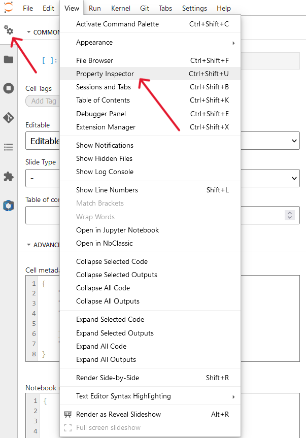
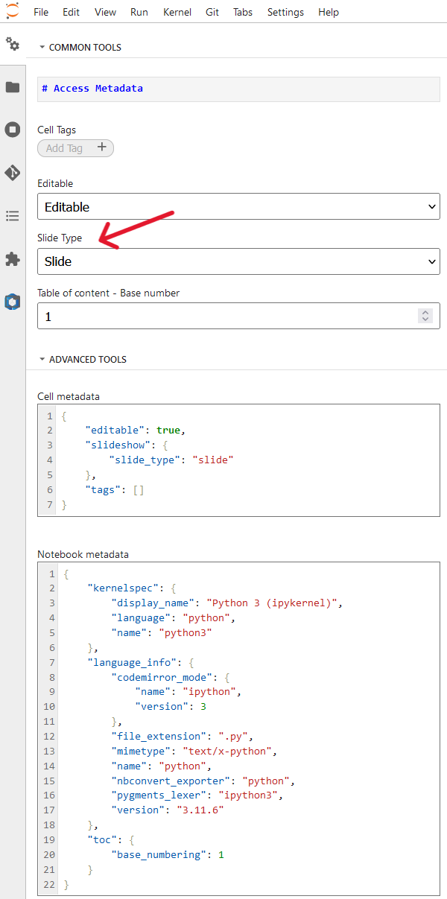
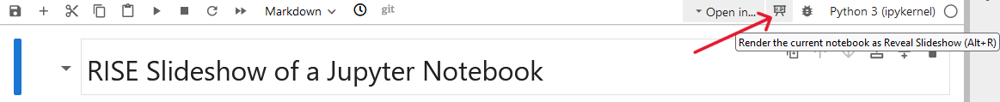
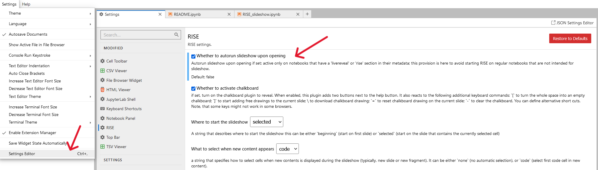
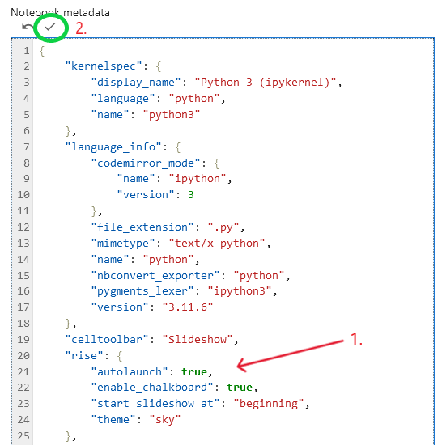

RISE Slideshow#
Of a Jupyter Notebook#
Author: Monika Doerig
Citation:
Full documentation of the RISE notebook extension
Press Space to proceed.
Before getting to the introduction and details of creating a slideshow, let’s set up this notebook to run in Google Colab.
Keep pressing Space to proceed.
Setup Neurodesk#
In code cells you press Shift-Enter (as usual) to evaluate your code and directly move to the next cell if it is already displayed.
Press Ctrl-Enter to run a command without direclty moving to the next cell.
Press Shift-Enter to run the following command to set up the Neurodesk environment.
# Press Ctrl-Enter to run the following commands to see the output (and not move directly to the next slide).
# Output CPU information:
!cat /proc/cpuinfo | grep 'vendor' | uniq
!cat /proc/cpuinfo | grep 'model name' | uniq
vendor_id : AuthenticAMD
model name : AMD EPYC-Rome Processor
Introduction to RISE#
RISE is Jupyter notebook slideshow extension that allows you to turn a Jupyter notebook into a live presentation based on reveal.js. The full documentation can be found here.
Keep pressing Space to proceed along the main line.
1. How to create slideshows#
Open or create a new Notebook (File > New > Notebook) in JupyterLab. Navigate to the View option in the menu and select Property Inspector (Ctrl+Shift+U). Alternatively, directly click on the gears icon to access cell and notebook metadata (on the left or right sidebar):
You should be able to scroll down if the entire image is not displayed.

To prepare a slideshow, select a Slide Type for each cell from the dropdown menu. It can be chosen between the following types:
Slide: This cell is the beginning of a new slide. These slides run from left to right.
Subslide: This cell is the beginning of a new sub-slide, which is a new slide, but is displayed below the previous one and runs form top to bottom (instead of left to right):
Fragment: A cell marked as fragment will split the contents of one slide into pieces; a break is created inside the slide and will not show up until
Spaceis pressed one more time to see it.Skip: This cell is ignored altogether in reveal mode, it will not appear either in the main view, nor in the speaker view.
Notes: This cell is marked to be discarded from the main view, but is meant to appear in the speaker view.

2. Running slideshows in JupyterLab on Neurodesk#
Start the slideshow by pressing the button
Render the current notebook as Reveal Slideshowor by pressing Alt+R.

Selection and evaluation#
To evaluate code, press Shift-Enter (as usual) to run it. This will move to the next cell if it is already displayed.
# this is where you press Shift-Enter
import numpy as np
a = np.arange(6)
a.shape
(6,)
# Press Ctrl-Enter to also see this output
a2 = a[np.newaxis, :]
a2.shape
(1, 6)
Other notes#
Markdown Images get left aligned by default. Enclose the image like
<center><img src='image.png'></center>to center it.Speaker notes: By selecting the Slide Type called
Notesthe content of this cell will be shown in the speaker view (a separate browser window). This view also provieds a timer and a preview of the next upcoming slide. Press thetkey to open a second window, with a presenter view, showing Notes cell which won’t show up in the main slides (however, the presentation will start from the beginning).
This is an example of a Notes cell.
3. Customize RISE#
RISE can be customized in many ways - here some pointers on what can be customized:
presentation theme
transition between slides
auto-launch presentation mode
where to start the presentation
automatic selection of cells
slide sizes
decoration (header/footer/background)
vertical scrollbar
chalkboard capabilities
using a leap motion controller
native reveal.js settings
custom CSS
keyboard shortcuts
Settings Editor#
RISE settings for all notebooks can be changed via the Settings Editor.
For example, to set up the notebook so that it starts immediately with the slideshow view, the configuration option autorun must be set to true. This is typically very helpful if a binder-hosted notebook is to be started in slideshow mode.

Notebook metadata#
Alternatively, these settings can also be saved/changed in the notebook metadata of the respective notebook, which contains a JSON object, that can be edited in the Property Inspector > ADVANCED TOOLS > Notebook metadata:
As an example, to autolunch the slideshow upon opening, the notebook metadata can be edited as follows:
...
"rise": {"autolaunch": true}
...
To start the slideshow at the beginning and not at the selected slide, the following configuration change can be made:
...
"rise": {"start_slideshow_at": "beginning"}
...
To save the configuration changes:
Edit the metadata
Save the changes by clicking the little tick icon that appears above the notebook metadata window.
